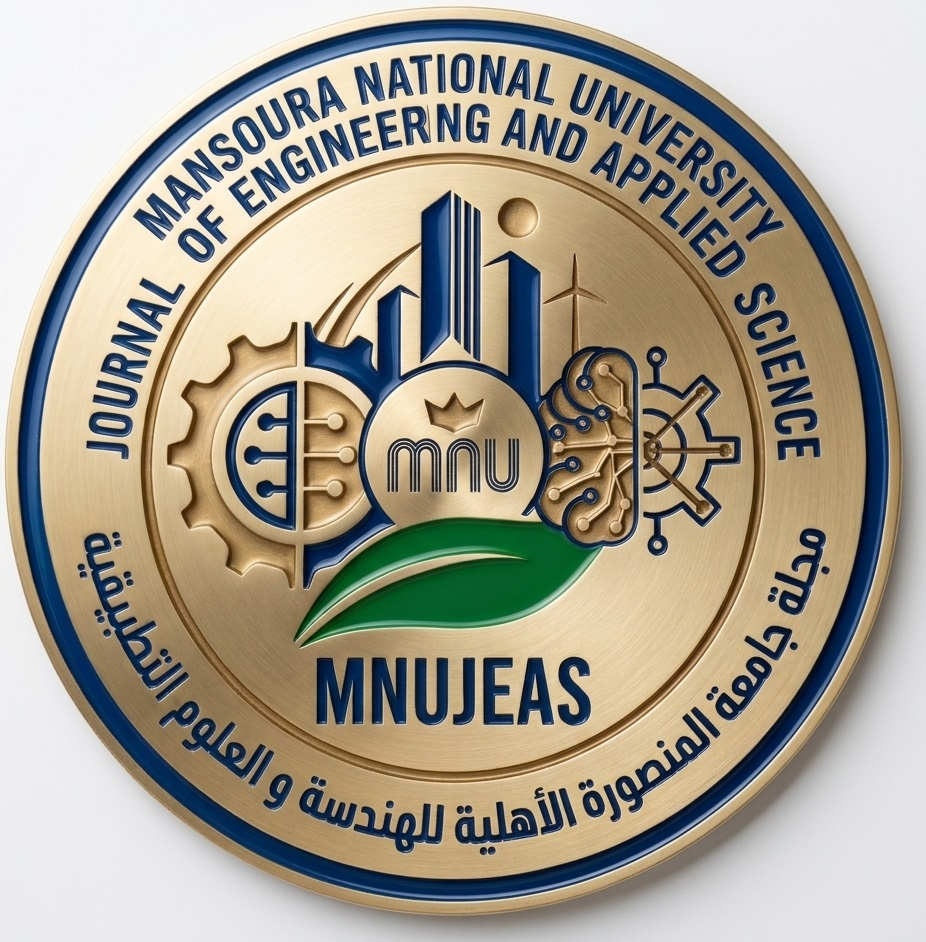

⌁
Scientific excellence
Promote original, methodologically sound research with a clearly stated contribution and strong engagement with relevant literature.

Mansoura National University Journal of Engineering and Applied Sciences
An interdisciplinary journal for original research, emerging technologies, and applied scientific advances—connecting rigorous scholarship with the challenges shaping tomorrow.
A scholarly platform for original research, innovation, and interdisciplinary exchange in engineering and applied sciences.
Mansoura National University Journal of Engineering and Applied Sciences (MNU-JEAS) is proposed as an international, open-access, peer-reviewed scientific journal owned and published by the Faculty of Engineering, Mansoura National University, Mansoura, Egypt.
The journal aims to disseminate scientifically rigorous research, encourage collaboration across disciplines, and support advances in engineering theory, design, development, and practical applications.
We welcome original work that makes a clear contribution to knowledge and addresses important engineering, technological, and societal challenges.
Promote original, methodologically sound research with a clearly stated contribution and strong engagement with relevant literature.
Encourage interdisciplinary approaches, emerging technologies, and partnerships across universities, research centres, and industry.
Support research relevant to resilient infrastructure, clean energy, environmental protection, and sustainable communities.
The journal's scope includes, but is not limited to:
Use this checklist to prepare a complete, clear, and ethically compliant submission. Final template and submission portal details should be added when officially available.
Confirm that the manuscript fits the journal's aims and makes a meaningful contribution to engineering or applied sciences.
Use clear professional English and organise the paper with an abstract, keywords, introduction, methods, results, discussion, conclusions, and references as appropriate.
Disclose funding and conflicts of interest. Include ethics, consent, data availability, and contribution statements where applicable.
Submit using the journal's official submission route once announced. All authors must approve the final manuscript and submission.
Template: To be announced.
Submission system: To be announced.
A transparent editorial pathway designed to evaluate originality, scientific quality, methodology, clarity, and relevance.
The Editor checks scope, completeness, originality, presentation, and compliance with submission and ethics requirements.
Manuscripts that pass screening are normally evaluated by at least two independent reviewers with relevant expertise.
Possible outcomes are accept, minor revision, major revision, or reject. The Editor makes the final decision.
Authors respond point-by-point. Revised papers may return to reviewers before final checks and publication.
The journal intends to use double-anonymous peer review, concealing author and reviewer identities from each other. This model should be implemented only once the necessary procedures are in place. Proposed revision targets are two weeks for minor revisions and three weeks for major revisions; extensions may be requested from the Editor.
Authors, editors, reviewers, and the publisher share responsibility for safeguarding research integrity and the reliability of the scholarly record.
Submissions must report original work. Plagiarism, duplicate publication, fabricated data, falsified results, and misleading image manipulation are unacceptable.
Authorship should reflect substantial scholarly contributions. All authors must approve the manuscript and agree to its submission.
Authors must disclose relevant financial and personal relationships and identify research funding and the sponsor's role.
Studies involving people, animals, or identifiable personal data must comply with applicable requirements and report approvals or consent where needed.
Authors should provide a data availability statement and share supporting data when lawful, ethical, and practicable.
Authors remain responsible for AI-assisted content. AI tools cannot be authors; material use should be disclosed according to the journal's final policy.
Editors and reviewers must protect manuscript confidentiality, disclose conflicts, and provide objective, professional evaluations.
Credible concerns will be assessed fairly. Depending on the evidence, the journal may issue a correction, expression of concern, or retraction.
A clear archive structure for browsing published research by year, volume, issue, article, and subject.
The journal's first volume and issue details will be displayed here after the publication schedule and first issue are formally established.
Current status: Publication archive to be configured.
A future-ready space for article files, supplementary materials, datasets, code, and research outputs associated with published work.
Store final published PDFs, metadata, abstracts, keywords, author information, and persistent identifiers in a consistent archive.
Provide links to datasets, source code, experimental protocols, extended figures, and other supporting files where appropriate.
Plan for durable identifiers, metadata quality, long-term preservation, and interoperability with appropriate scholarly repositories.
Published by the Faculty of Engineering, Mansoura National University, Egypt.